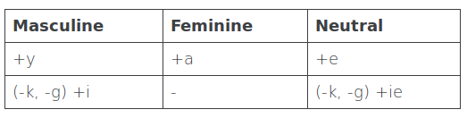

Random Polish Thought: Dziecko
As you know that I am learning Polish, I will probably post some random thoughts about this language over time. Let's start with the first one.
Inflected Part of Speech
Some POS (Part of Speech) in Polish are inflected, means that their ending would change depending on subject, tenses, number, gender, or case. Those inflected POS are noun (rzeczowniki), adjective (przymiotniki), pronoun (zaimki), numeral (liczebniki), and verb (czasowniki).
Now, let's talk about adjective. Adjective is one of the inflected POS based on the gender of the subject or object that we describe. This is how the inflection works:

If it's masculine, then we need to inflect it to end with y. If the word ends with k or g, we inflect it to end with i. Simple enough.
Now, let's talk about dziecko (a child - which is neutral gender). When you describe a dziecko, you need to inflect the adjective with -e. So for example you want to say "My child is still small". In Polish it would be: "Moje dziecko jest jeszcze małe"
Now the random thought is, what if that dziecko wants to describe him/herself? Would the child use neutral adjective? or just based on his/her gender? Let's imagine for a while if it's actually the first one (I hope it's the later). There must be a time when he/she is grown enough to not be called a dziecko anymore. Is there a Poles' celebration for that? Or maybe dziecko definition is 'a kid who can't speak, or write yet'? Hmm, I really need to tell my brain to shut up :)